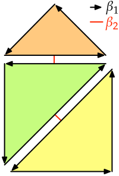

Chapter 4 identified the most promising data structures in the context of a higher-dimensional GIS and explained how certain fundamental operations are intimately related to the data structures for which they are defined. This chapter therefore covers a number of basic dimension-independent operations, some of which need to be defined in the context of a specific data structure. These operations are by themselves useful, as they correspond to common simple queries and modification. In addition, some of them are used as building blocks for the more complex operations described in latter chapters of this thesis.
§5.1 introduces basic properties and operations on generalised/combinatorial maps and on Nef polyhedra, which are later respectively used for more complex higher-dimensional operations (Chapters 6, 7 & 8) and for cleaning 2D and 3D data (Chapter 10). §5.2 describes how to apply basic transformations to an \(n\)D simplicial/cell complex, which can be used to manipulate \(n\)D objects and to move around an \(n\)D scene (Chapter 9).
§5.3 describes some spatial indexing methods which can be applied to higher-dimensional objects, allowing a system to solve two common problems: keeping track of disconnected objects and efficiently obtaining the objects in a particular region. §5.4 discusses how the concept of duality works in higher dimensions, which can be used to characterise the relationships between objects of any dimension. §5.5 puts the concepts of this chapter into practice by providing a few concrete examples of simple dimension-independent operations, including a technique to quickly compare objects in any dimension, which is itself used as the basis of the incremental construction operation in Chapter 7. These examples showcase how operations on an ordered topological model are remarkably efficient compared to the same operations on a Simple Features-like representation.
Most of §5.4 is based on the paper:
- Representing the dual of objects in a four-dimensional GIS. Ken Arroyo Ohori, Pawel Boguslawski and Hugo Ledoux. In A. Abdul Rahman, P. Boguslawski, C. Gold and M. N. Said (eds.), Developments in Multidimensional Spatial Data Models, Lecture Notes in Geoinformation and Cartography, Springer Berlin Heidelberg, Johor Bahru, Malaysia, May 2013, pp. 17–31.
5.1 Basic operations on certain data structures
5.1.1 Generalised and combinatorial maps
As described in §4.3.6, an object in an ordered topological model is described as a set of combinatorial simplices, which are connected by a set of predefined relations. These relations and the operations that use them are described in more detail below, partly based on the definitions used in Damiand and Lienhardt [2014]. Note however that some of the definitions presented here are somewhat simplified, as they are meant only to handle the types of representations and further operations used in this thesis.
In the case of a generalised map, which is shown in Figure 5.1, all the relations between darts take the form of involutions—bijective functions that are their own inverse. That is, they are functions \(f\) such that \(f\big(f(x)\big) = x\), or equivalently \(f = f^{-1}\). In addition, certain darts are \(i\)-free, which means that for a given dart \(d\), \(\alpha_i(d) = d\). These darts represent the boundary of the map.

(a)
(b)
(c)
Figure 5.1: (a) A 2D cell complex represented as (b) a 2D generalised map in a simplicial complex-based depiction as used in §4.3.6, and (c) in a simpler depiction using half-edges and showing explicitly the relations between the darts. As involutions are pairwise relations between darts, they are their own inverse, i.e. applying them twice always means returning to the original dart.↩
More formally, a \(n\)-dimensional generalised map is defined as a \((n+2)\)-tuple \(G = (D,\alpha_{0},\ldots,\alpha_{n})\), where:
- \(D\) is a finite set of darts;
- \(\forall 0 \leq i \leq n\), \(\alpha_{i}\) is an involution on \(D\);
- \(\forall 0 \leq i \leq n-2, \forall i+2 \leq j \leq n\), \(\alpha_{i}\circ \alpha_{j}\) is an involution on \(D\).
In a combinatorial map, the relations between the darts are somewhat different. As shown in Figure 5.2, polygonal curves in a combinatorial map result in some darts that have an undefined \(\beta_1\) relation. For a given dart \(d\) with an undefined relation \(\beta_1\), this is encoded as \(\beta_1(d) = \emptyset\) and the dart is said to be \(1\)-free. Because of this, the \(\beta_1\) relations in a combinatorial map do not form involutions, but instead form only partial permutations. In addition, as shown in Figure 5.3, in a combinatorial map of any dimension, the darts that lie on the boundary of the map have certain undefined \(\beta\) relations, which are set to the special value \(\emptyset\). If a given \(\beta_i(d) = \emptyset\), the dart \(d\) is said to be \(i\)-free. Because of the existence of these relations, the \(\beta\) relations of a combinatorial map other than \(\beta_1\) form partial involutions.
More formally, an \(n\)-dimensional combinatorial map is defined as an \((n+1)\)-tuple \(C = (D, \beta_{1}, \ldots, \beta_{n})\) where:
- \(D\) is a finite set of darts;
- \(\beta_{1}\) is a partial permutation on \(D\);
- \(\forall 2 \leq i \leq n\), \(\beta_{i}\) is a partial involution on \(D\);
- \(\forall 0 \leq i \leq n-2, \forall 3 \leq j \leq n\), \(i+2 \leq j\), \(\beta_{i}\circ \beta_{j}\) is a partial involution on \(D\).
The properties of generalised and combinatorial maps are crucial, as when they are enforced, they ensure that darts form a valid combinatorial structure. They also allow the definition of various operations that operate on the combinatorial structures induced by the darts and their relations. Many of these operations are based on the concept of an orbit, a subset of the darts of a generalised/combinatorial map that are connected by certain relations. Starting from a given dart \(d\) and a set of relations \(A\), the orbit \(\langle A \rangle(d)\) obtains all the darts that can be reached by recursively following all relations in \(A\).
- Darts of a cell Considering that every cell in a generalised or combinatorial map is represented by a set of darts, an important basic operation is obtaining all the darts that represent a given cell (of any dimension). In a generalised map, from a given dart \(d\) known to be part of an \(i\)-cell, the darts of the \(i\)-cells are those that can be reached by recursively following all relations except for \(\alpha_i\). As shown in Figure 5.4, this is given by the orbit \(\langle\alpha_0, \ldots, \alpha_{i-1}, \alpha_{i+1}, \ldots, \alpha_n\rangle(d)\). In a combinatorial map, due to the oriented nature of the \(\beta_1\) relations, in order to obtain the darts of a \(0\)-cell it is instead necessary to follow a composition of relations given by \(\langle \{\beta_j\circ \beta_k \mid \forall 1 \leq k \leq n, \forall 1 \leq j \leq k\} \rangle(d)\). The cells of dimension two and higher are obtained in a similar manner as in a generalised map, by following all relations except for \(\beta_i\), i.e. \(\langle\beta_1, \ldots, \beta_{i-1}, \beta_{i+1}, \ldots, \beta_n\rangle(d)\).
(a)
(b)
Figure 5.4: Starting from (a) a 2D generalised map representation of a cube, all the darts representing an \(i\)-cell of the map can be obtained by starting from any dart known to be part of the \(i\)-cell, then using the orbit that contains all relations but \(\alpha_i\). (b) Here, the orbits of a specific 0-cell, 1-cell and 2-cell.↩
- Isomorphism It is possible to check if two maps are isomorphic by finding whether there is a one-to-one mapping between the darts in the maps that also preserves the relations between them. That is, given two generalised maps \((D,\alpha_{0},\ldots,\alpha_{n})\) and \((D^\prime,\alpha_{0}^\prime,\ldots,\alpha_{n}^\prime)\), an isomorphism is a function \(f: D \rightarrow D^\prime\) such that \(\forall d \in D, \forall 0 \leq i \leq n, f\big(\alpha_i\left(d\right)\big) = \alpha_i^\prime\left(f\left(d\right)\right)\). Similarly, given two combinatorial maps \((D, \beta_{1}, \ldots, \beta_{n})\) and \((D^\prime, \beta_{1}^\prime, \ldots, \beta_{n}^\prime)\), an isomorphism is a function \(f: D \cup \left\{\emptyset\right\} \rightarrow D^\prime \cup \left\{\emptyset\right\}\) such that \(f(\emptyset) = \emptyset\), and else \(\forall d \in D, \forall 1 \leq i \leq n, f\left(\beta_i\left(d\right)\right) = \beta_i^\prime\left(f\left(d\right)\right)\).
- Sewable darts Starting from isolated darts, these can be assembled together via the sewing operation, described below. However, it is important to first determine if they can be sewed together along a given dimension. Given a generalised map \((D,\alpha_{0},\ldots,\alpha_{n})\) and two darts from the map \(d,d^\prime \in D\), \(d\) and \(d^\prime\) are \(i\)-sewable if and only if \(d \neq d^\prime\), \(d\) and \(d^\prime\) are \(i\)-free, and there is an isomorphism between \(\langle\alpha_0, \ldots, \alpha_{i-2}, \alpha_{i+2}, \ldots, \alpha_n\rangle(d)\) and \(\langle\alpha_0, \ldots, \alpha_{i-2}, \alpha_{i+2}, \ldots, \alpha_n\rangle(d^\prime)\) such that \(f(d) = d^\prime\)76. Similarly, given a combinatorial map \((D, \beta_{1}, \ldots, \beta_{n})\) and two darts from the map \(d,d^\prime \in D\), \(d\) and \(d^\prime\) are \(i\)-sewable if and only if \(d \neq d^\prime\), \(d\) and the inverse of \(d^\prime\) are \(i\)-free, and there is an isomorphism between \(\langle\beta_1, \ldots, \beta_{i-2}, \beta_{i+2}, \ldots, \beta_n\rangle(d)\) and \(\langle\beta_1, \ldots, \beta_{i-2}, \beta_{i+2}, \ldots, \beta_n\rangle(d^\prime)\) such that \(f(d) = d^\prime\)77.
- Sewing The sewing operation is the basic construction method used to link isolated darts in a map in order to form cell complexes. Intuitively, it is possible to link two \(i\)-cells along a common \((i-1)\)-cell by sewing corresponding darts on the common bounding \((i-1)\)-cell around each \(i\)-cell. As shown in Figure 5.5, this operation is thus equivalent to a parallel traversal of two maps that links its corresponding darts along an \((i-1)\)-cell. Given a generalised map \((D,\alpha_{0},\ldots,\alpha_{n})\) and two darts \(d,d^\prime \in D\) that are \(i\)-sewable using the isomorphism \(f\), \(i\)-sewing \(d\) and \(d^\prime\) means that \(\forall e \in \langle\alpha_0, \ldots, \alpha_n\rangle(d)\), \(\alpha_i(e)\) should be set to \(f(e)\) and \(\alpha_i\big(f(e)\big)\) should be set to \(e\). Given a combinatorial map \((D, \beta_{1}, \ldots, \beta_{n})\) and two darts \(d,d^\prime \in D\) that are \(1\)-sewable using the isomorphism \(f\), \(1\)-sewing \(d\) and \(d^\prime\) means that \(\forall e \in \langle \{\beta_i\circ \beta_j \mid \forall 3 \leq k \leq n, \forall 3 \leq j \leq k\} \rangle(d)\), \(\beta_1(e)\) should be set to \(f(e)\) and \(\forall e^\prime \in \langle \{\beta_i\circ \beta_j \mid \forall 3 \leq k \leq n, \forall 3 \leq j \leq k\} \rangle(d^\prime)\), \(\beta_1(f(e^\prime))\) should be set to \(e^\prime\). For the cells of dimension two and higher, if \(d\) and \(d^\prime\) are \(i\)-sewable (\(i \geq 2\)), \(i\)-sewing them means that \(\forall e \in \langle\beta_{1}, \ldots, \beta_{n}\rangle(d)\), \(\beta_i(e)\) should be set to \(f(e)\) and \(\beta_i\big(f(e)\big)\) should be set to \(e\).
Figure 5.5: Two cubes in a 3D generalised map can be linked together by 3-sewing corresponding darts on the common face (highlighted) on each cube. This operation uses the orbits of each face on each cube in order to link all corresponding darts on both orbits.↩
5.1.2 Nef polyhedra
As discussed in §4.3.3, Nef polyhedra [Nef, 1978; Bieri and Nef, 1988] are able to represent polytopes of any dimension based on a set of local pyramids, which contain the neighbourhood information around each vertex. Despite the fact that—to the best of my knowledge—there is no available implementation of Nef polyhedra in more than three dimensions, their dimension-independent formulation and the relative ease of implementing robust operations on Nef polyhedra nevertheless make them valuable in a higher-dimensional setting.
In particular, Boolean set operations on 2D Nef polygons and 3D Nef polyhedra are very useful to obtain valid 2D and 3D datasets—something that will be shown in §10.3. These clean datasets can then be used as a base for higher-dimensional ones, either by extruding them (Chapter 6), by using them to define parts of a higher-dimensional object’s boundary (Chapter 7), or by linking corresponding datasets that represent other points in scale or time (Chapter 8), among other possibilities.
The key advantage of operations on Nef polyhedra is the fact that many of them can be largely implemented at the local pyramid level. As shown by Seel [2001] in 2D and Hachenberger [2006] in 3D, Boolean set operations are one such case. Based on the approach advocated by Rossignac and O'Connor [1989], it is possible to compute these type of binary (or \(n\)-ary) operations in three steps: subdivision, selection and simplification. The subdivision is the most complex of these. It consists of computing an overlay of the input polyhedra, creating the overall structure where the result will be put (e.g. the vertices, edges, faces and volumes of a cell complex). This can be computed with the methods used for arrangements of line segments in 2D [de Berg et al., 1998, §8.3], or by computing line-segment-to-line-segment and line-segment-to-polygon intersections in 3D [Hachenberger, 2006], which give the locations of the new vertices and thus the new local pyramids.
After this, the selection step computes whether the individual cells are to be considered as part of the output or not (i.e. whether they are in the interior or exterior of the Nef polygons/polyhedra). The simplification removes unnecessary structures in way that does not alter the point set that is represented, akin to the dissolving operations common in GIS.
Figure 5.6 shows an example of how this works in practice in 2D. A 2D Boolean set operation kernel starts from two Nef polygons \(A\) and \(B\)—each of which is stored as a set of local pyramids at its corresponding vertices. As shown previously in Figure 3.3, each of these 2D local pyramids can be stored as a list of 1D intervals78. The kernel first computes the intersections between the line segments (as an overlay problem). The vertices of each polygon and the intersection points between the line segments yield the local pyramids to be considered. The local pyramid intervals for both polygons at all of these locations are computed. A Boolean set operation is then computed by applying it to the local pyramids (i.e. to the intervals). Finally, unnecessary local pyramids can be removed from the output (e.g. in Figure 5.5: \(f\) in \(A \cup B\); \(a\), \(b\), \(c\), \(g\), \(i\), \(j\) and \(k\) in \(A \cap B\); and \(a\), \(c\), \(j\) and \(k\) in \(A - B\)).
(a)
(b)
Figure 5.6: Various Boolean set operations on (a) the Nef polygons \(A\) (red) and \(B\) (blue) that can be performed on (b) their local pyramids: complement (\(\neg\)), union (\(\cup\)), intersection (\(\cap\)) and difference (\(-\)).↩
5.2 Basic transformations of an \(n\)D scene
Starting from an \(n\)-dimensional simplicial complex or cell complex with linear geometry, where every vertex is embedded in a location in \(\mathbb{R}^n\), it is possible to define a set of basic transformations to manipulate \(n\)D objects simply by applying them to the coordinates of every vertex. This section thus describes dimension-independent versions of the three most important transformations to an \(\mathbb{R}^n\) point set: translation, rotation and scaling. In addition, it explains how to compute the cross-product in higher dimensions, which is later used to compute a vector that is orthogonal to all of a set of other vectors.
Translating of a set of points in \(\mathbb{R}^n\) can be easy expressed as a sum with a vector \(t = \left[t_0, \ldots, t_n\right]\), or alternatively as a multiplication with a matrix using homogeneous coordinates, which is defined as:
\begin{equation*} T = \begin{bmatrix} 1 & 0 & \cdots & 0 & t_0 \\ 0 & 1 & \cdots & 0 & t_1 \\ \vdots & \vdots & \ddots & \vdots & \vdots \\ 0 & 0 & \cdots & 1 & t_n \\ 0 & 0 & \cdots & 0 & 1 \\ \end{bmatrix} \end{equation*}
In particular, it is often useful to apply a multiplication with a centering matrix [Marden, 1996, §3.2], which moves a dataset to a position around the origin. Such a matrix would be defined as \(\mathbb{I}_n - \frac{1}{n}\mathbb{1}\), where \(\mathbb{I}\) is the identity matrix and \(\mathbb{1}\) is a matrix where all entries are set to 1.
Scaling is similarly simple. Given a vector \(s = \left[ s_0, s_1, \ldots, s_n \right]\) that defines a scale factor per axis (which in the simplest case can be the same for all axes), it is possible to define a matrix to scale an object as:
\begin{equation*} S = \begin{bmatrix} s_0 & 0 & \cdots & 0 \\ 0 & s_1 & \cdots & 0 \\ \vdots & \vdots & \ddots & \vdots \\ 0 & 0 & \cdots & s_n \\ \end{bmatrix} \end{equation*}
Rotation is somewhat more complex. Rotations in 3D are often conceptualised intuitively as rotations around an axis. As there are three degrees of rotational freedom in 3D, combining three such elemental rotations can be used to describe any rotation in 3D space. Most conveniently, these three rotations can be performed respectively around the \(x\), \(y\) and \(z\) axes, such that a point’s coordinate on the axis being rotated remains unchanged. This is a very elegant formulation, but this view of the matter is only valid in 3D.
A more correct way to conceptualise rotations is to consider them as rotations parallel to a given plane [Hollasch, 1991], such that a point that is continuously rotated (without changing rotation direction) will form a circle that is parallel to that plane. This view is valid in 2D (where there is only one such plane), in 3D (where a plane is orthogonal to the usually defined axis of rotation) and in any higher dimension. Incidentally, this shows that the degree of rotational freedom in \(n\)D is given by the number of possible combinations of two axes (which define a plane) on that dimension [Hanson, 1994], i.e. \(\binom{n}{2}\). A general rotation in any dimension can also be seen as a sequence of elementary rotations, although the total number of these rotations that need to be performed increases significantly.
Consider the 2D rotation matrix \(R_{xy}\) that rotates points in \(\mathbb{R}^2\) parallel to the \(xy\) plane:
\begin{equation*} R_{xy} = \begin{bmatrix} \cos \theta & -\sin \theta \\ \sin \theta & \cos \theta \\ \end{bmatrix} \end{equation*}
Based on it, it is possible to obtain the three 3D rotation matrices to rotate points in \(\mathbb{R}^3\) around the \(x\), \(y\) and \(z\) axes, which correspond to the rotations parallel to the \(yz\), \(zx\) and \(xy\) planes79. These would consist of an identity row and column that preserves the coordinate of a particular axis and rotates the coordinates of the other two, resulting in the following three 3D rotation matrices:
\begin{equation*} R_{yz} = \begin{bmatrix} 1 & 0 & 0 \\ 0 & \cos \theta & -\sin \theta \\ 0 & \sin \theta & \cos \theta \\ \end{bmatrix} \end{equation*}
\begin{equation*} R_{zx} = \begin{bmatrix} \cos \theta & 0 & \sin \theta \\ 0 & 1 & 0 \\ -\sin \theta & 0 & \cos \theta \\ \end{bmatrix} \end{equation*}
\begin{equation*} R_{xy} = \begin{bmatrix} \cos \theta & -\sin \theta & 0 \\ \sin \theta & \cos \theta & 0 \\ 0 & 0 & 1 \\ \end{bmatrix} \end{equation*}
Similarly, in a 4D coordinate system defined by the axes \(x\), \(y\), \(z\) and \(w\), it is possible to define six 4D rotation matrices, which correspond to the six rotational degrees of freedom in 4D [Hanson, 1994]. These respectively rotate points in \(\mathbb{R}^4\) parallel to the \(xy\), \(xz\), \(xw\), \(yz\), \(yw\) and \(zw\) planes:
\begin{equation*} R_{xy} = \begin{bmatrix} \cos \theta & -\sin \theta & 0 & 0 \\ \sin \theta & \cos \theta & 0 & 0 \\ 0 & 0 & 1 & 0 \\ 0 & 0 & 0 & 1 \\ \end{bmatrix} \end{equation*}
\begin{equation*} R_{xz} = \begin{bmatrix} \cos \theta & 0 & -\sin \theta & 0 \\ 0 & 1 & 0 & 0 \\ \sin \theta & 0 & \cos \theta & 0 \\ 0 & 0 & 0 & 1 \\ \end{bmatrix} \end{equation*}
\begin{equation*} R_{xw} = \begin{bmatrix} \cos \theta & 0 & 0 & -\sin \theta \\ 0 & 1 & 0 & 0 \\ 0 & 0 & 1 & 0 \\ \sin \theta & 0 & 0 & \cos \theta \\ \end{bmatrix} \end{equation*}
\begin{equation*} R_{yz} = \begin{bmatrix} 1 & 0 & 0 & 0 \\ 0 & \cos \theta & -\sin \theta & 0 \\ 0 & \sin \theta & \cos \theta & 0 \\ 0 & 0 & 0 & 1 \\ \end{bmatrix} \end{equation*}
\begin{equation*} R_{yw} = \begin{bmatrix} 1 & 0 & 0 & 0 \\ 0 & \cos \theta & 0 & -\sin \theta \\ 0 & 0 & 1 & 0 \\ 0 & \sin \theta & 0 & \cos \theta \\ \end{bmatrix} \end{equation*}
\begin{equation*} R_{zw} = \begin{bmatrix} 1 & 0 & 0 & 0 \\ 0 & 1 & 0 & 0 \\ 0 & 0 & \cos \theta & -\sin \theta \\ 0 & 0 & \sin \theta & \cos \theta \\ \end{bmatrix} \end{equation*}
This scheme of a set of elementary rotations can be easily extended to any dimension, always considering a rotation matrix as a transformation that rotates two coordinates of every point and maintains all other coordinates. An alternative to this could be to apply more than one rotation at a time [van Elfrinkhof, 1897]. However, for an application expecting user interaction, it might be more intuitive to rely on an arbitrarily defined rotation plane that does not correspond to specific axes, e.g. by defining such a plane through a triplet of points [Hanson, 1994].
Finally, the cross-product is also easier to understand by first considering the lower-dimensional cases. In 2D, it is possible to obtain a normal vector to a 1D line as defined by two (different) points \(p^0\) and \(p^1\), or equivalently a normal vector to a vector from \(p^0\) to \(p^1\). In 3D, it is possible to obtain a normal vector to a 2D plane as defined by three (non-collinear) points \(p^0\), \(p^1\) and \(p^2\), or equivalently a normal vector to a pair of vectors from \(p^0\) to \(p^1\) and from \(p^0\) to \(p^2\). Similarly, in \(n\)D it is possible to obtain a normal vector to a \((n-1)\)D subspace80 as defined by \(n\) linearly independent points \(p^0, p^1, \ldots, p^{n-1}\), or equivalently a normal vector to a set of \(n-1\) vectors from \(p^0\) to every other point (i.e. \(p^1, p^2, \ldots, p^{n-1}\)) [Massey, 1983; Elduque, 2004].
Hanson [1994] follows the latter explanation using a set of \(n-1\) vectors all starting from the first point to give an intuitive definition of the \(n\)-dimensional cross-product. Assuming that a point \(p^i\) in \(\mathbb{R}^n\) is defined by a tuple of coordinates denoted as \((p^i_0, p^i_1, \ldots, p^i_{n-1})\) and a unit vector along the \(i\)-th dimension is denoted as \(\hat{x}_i\), the \(n\)-dimensional cross-product \(\vec{N}\) of a set of points \(p^0, p^1, \ldots, p^{n-1}\) can be expressed compactly as the cofactors of the last column in the following determinant:
\begin{align*} \vec{N} &= \begin{vmatrix} (p^1_0 - p^0_0) & (p^2_0 - p^0_0) & \cdots & (p^{n-1}_0) & \hat{x}_0 \\ (p^1_1 - p^0_1) & (p^2_1 - p^0_1) & \cdots & (p^{n-1}_1) & \hat{x}_1 \\ \vdots & \vdots & \ddots & \vdots & \vdots \\ (p^1_{n-1} - p^0_{n-1}) & (p^2_{n-1} - p^0_{n-1}) & \cdots & (p^{n-1}_{n-1}) & \hat{x}_{n-1} \\ \end{vmatrix} \end{align*}
The components of the normal vector \(\vec{N}\) are thus given by the minors of the unit vectors \(\hat{x}_0, \hat{x}_1, \ldots, \hat{x}_{n-1}\). This vector \(\vec{N}\)—like all other vectors—can be normalised into a unit vector by dividing it by its norm \(\begin{Vmatrix} \vec{N} \end{Vmatrix}\).
5.3 Spatial indexing
As discussed in §4.4, a topological vector approach seems most promising for a higher-dimensional GIS, as it enables the compact storage of precise object shapes of any dimension together with their attributes. However, vector data structures by themselves lack a fast access method to access the objects at a certain location or in a certain region (e.g. a bounding box). In addition, in many instances datasets are composed of multiple combinatorially unconnected components, between which it is not possible to navigate using topological relationships. As many algorithms are defined as recursive traversals from a given combinatorial primitive, this lack of connectivity often causes wrong results.
Both of these issues are typically solved in GIS by keeping a spatial index—an ancillary data structure that contains links to every object can be efficiently queried [van Oosterom, 1999]. These links can point to embedding structures or to combinatorial primitives.
Some of these spatial indices use the same exhaustive enumeration (i.e. raster) and hierarchical subdivision representations described respectively in §4.3.1 and §4.3.2. Rather than describing objects as a region of a space partition, they store links to the objects that are partially or fully contained in the region. Commonly used structures of this type include: grids, quad/oc/k-trees [Finkel and Bentley, 1974; Meagher, 1980; Yau and Srihari, 1983; Jackins and Tanimoto, 1983] and \(k\)-d trees [Bentley, 1975].
Other data structures are also based on hierarchical subdivisions, but they do not contemplate a space partition. Instead, the regions represented by the children of a node can overlap. Data structures of this type include: R-trees [Guttman, 1984], R+-trees [Sellis et al., 1987] and R*-trees [Beckmann et al., 1990].
With simple adaptations, these data structures can also be used to index objects in higher dimensions. However, it is important to note that space-partitioning indexing approaches are not faster than brute force searches on a list of objects on high-dimensional spaces [Weber et al., 1998], and so the dimension of the data needs to be taken into account. Objects of heterogeneous dimension are also a frequent source of problems, as lower-dimensional objects often result in undesirable edge cases in the heuristics used to keep well-shaped hierarchical subdivisions. For instance, an axis-aligned lower-dimensional object can result in its bounding box having a Lebesgue measure81 of zero, resulting in long thin boxes that overlap many possible queries.
Hashing techniques are an interesting alternative, as they allow constant time (or at least low complexity) access to objects. While most forms of hashing are not suitable for spatial objects, there are two relevant exceptions. Geometric hashing [Wolfson and Rigoutsos, 1997] defines a hashing function that is invariant to the (geometric) properties that are required for a particular application, ensuring that objects with a similar shape have similar hash codes. Locality-sensitive hashing [Andoni and Indyk, 2008] instead ensures that objects that are close together also have hash codes that are close together.
A simple indexing approach, which is often used for the work presented in this thesis is to maintain an index on objects based on their lexicographically smallest vertex82. While this approach is not very useful when trying to obtaining the objects in a region, it is easy to implement and very efficient for many simple operations, such as when objects need to be compared. In fact, by linking directly an index entry to one of a cell’s darts which is embedded at the lexicographically smallest vertex (as opposed to an arbitrary dart of the cell), it is possible to significantly limit certain types of search comparisons to a small set of possible starting darts83. An extensive example of the use of such an index for comparisons is shown later in §5.5.
5.4 Duality in higher dimensions
The concept of Poincaré duality (§2.3.2) is used in conjunction with spatial information to understand and represent how things are connected. In two dimensions, one application is qualifying the spatial relationships between adjacent objects: as shown in Figure 5.7, Gold [1991] uses the quad-edge data structure [Guibas and Stolfi, 1985] to store simultaneously a map (where each polygon in the map can have certain attributes) and its dual (the boundaries between two adjacent map objects, which can also have certain attributes, e.g. the boundary type or the flow direction).
(a)
(b)
(c)
Figure 5.7: (a) Six map objects and their boundaries. (b) The same map stored as a graph and its dual (dotted lines). (c) The dual graph is used to describe the relationships between adjacent polygons. From Ledoux [2006, Ch. 6], itself based on Gold [1991].↩
In three dimensions, duality characterises how volumes are related (e.g. stating that two neighbouring rooms in a building are connected or adjacent). A typical example involves the Delaunay triangulation and the Voronoi diagram, which are dual to each other. Dakowicz and Gold [2003] use them for terrain modelling, Lee and Gahegan [2002] for interactive analysis, and Ledoux and Gold [2008] for three-dimensional fields in the geosciences. In GIS, it is most commonly used to model paths inside 3D buildings, which can be used for navigation computations. Lee and Zlatanova [2008] and Lee and Kwan [2005] extract from a 3D building a graph that can be used in case of emergency, and Boguslawski et al. [2011] and Boguslawski and Gold [2011] perform the same using the dual half-edge data structure, which simultaneously represents the buildings (the rooms and their boundaries) and the navigation graph. Liu and Zlatanova [2013] is especially interesting, as it attempts to obtain such a graph from models stored in the 3D standards most widely used in GIS, CityGML and IFC.
In higher-dimensional context of this thesis, duality similarly characterises relationships between objects, albeit its exact meaning depends on the characteristics being modelled as dimensions. For instance, in a 3D space+time setting where a 4-cell represents a volume existing through time, the adjacency relationships between 4-cells represent volumes that were adjacent or connected during one or more time intervals. These relationships can thus be used to answer connectivity questions in space-time without the need to add additional semantics in the model. For instance, it would make it possible to create a 3D indoor and outdoor way-finding application, where a user can select any given start and end points and a point in time, and be given the shortest 3D route at that time, taking into account all possible topological changes (e.g. construction work that closes down parts of the building, the dynamic reconfiguration of spaces using plasterboard, or connecting corridors that are only open during office hours). It is worth noting that such a 4D representation effectively stores the entire history of connectivity in a building without any added effort.
In a dimension-independent setting, generalised and combinatorial maps are notable because they simultaneously encode a cell complex and its dual. As shown in Figure 5.8, if an \(n\)-dimensional cell complex is stored as an \(n\)-dimensional generalised map, swapping \(\alpha_n\) and \(\alpha_{n-i}\) for every \(i\) for every dart, the dual of the map is obtained84. Note however that as shown in Figure 5.8b, in order to obtain a dual cell complex properly embedded in \(\mathbb{R}^n\), it is in practice necessary to compute a new point embedding that lies in the interior of every \(n\)-cell.
(a)
(b)
(c)
(d)
Figure 5.8: The dual of (a) a 2D generalised map can be obtained by (b) computing a point location for the dual 2-cells (e.g. their centroid) and swapping \(\alpha_0\) and \(\alpha_2\), and (c) considering the 2-cells as 0-cells with their new point embeddings. By extending every the exterior of (a) as an additional unbounded face, it is possible to arrive at the alternative dual map in (d).↩
5.5 Comparing two objects with and without signatures
In order to showcase the difference between the topological and non-topological approaches in representing higher-dimensional spatial information, this section compares how efficient the two approaches are in terms of size, and how efficiently three fundamental operations can be performed in either case. The configurations for these tests are shown in Figure 5.9 and respectively involve verifying that two tesseracts are: equal (i.e. that they represent the same 4-cell), adjacent (i.e. that they share a common 3-cell facet), and sharing a common 2-cell ridge. As an example of the topological approach, objects will be represented as a combinatorial map with indices on the lexicographically smallest vertex of every cell. Meanwhile, the non-topological approach will be exemplified with the Simple Features-like [OGC, 2011] representation shown in §4.2.3 and Figure 4.7. Indices make little sense in the latter, as there are no combinatorial primitives to navigate and every lower-dimensional cell is represented multiple times. Note that the objects are assumed to have identical coordinates and structure at this point. If this is not the case, cleaning methods such as those mentioned in Chapter 10 or those described by Diakité et al. [2014] need to be applied first.

(a)
(b)
(c)
Figure 5.9: A stereographic projection of three pairs of tesseracts representing: (a) equality (common 4-cell), (b) adjacency (a common 3-cell), and (c) common 2-cell. Only the edges of each tesseract are shown.↩
The tests involving comparisons of combinatorial maps use the method of Gosselin et al. [2011], which can be used to compare two orbits of a map using signatures. This method will also be used extensively in Chapter 7. Based on the ordering properties of a map, it is possible to traverse a given orbit from a given dart in a manner that is always consistent, yielding a canonical representation. By following parallel traversals of this type, an algorithm can verify that two cells or maps are isomorphic in \(O(n^2)\) time on the number of darts in a cell or cell complex.
Intuitively, the quadratic complexity reflects the fact that two cells or cell complexes are tested for isomorphism by starting one traversal always at the same dart in one of the cells or cell complexes, possibly including a comparison of up to \(n\) darts, while trying all \(n\) possible starting darts in the other cell or cell complex. However, it is worth noting that most of the comparisons will stop as soon as one test fails85, yielding a much better complexity in all but the most pathological cases. Interestingly, Gosselin et al. [2011] also provides a method to verify an isomorphism in \(O(n)\) time on a specially generated external signature that uses \(O(n^2)\) space, but this method is deemed too space-intensive for the purposes of this thesis.
All tests are described in detail below.
Size comparison
Comparing the size of each structure is rather difficult as it can vary greatly depending on the specific implementation. The specific implementations described below should nevertheless be roughly comparable, as they are relatively tailored to the kind of object being represented but do not hard-code any of its specific properties (e.g. the number of its bounding 3- or 2-cells).
- Combinatorial map A combinatorial maps representation of a tesseract (Figure 7.5) is represented as 192 darts and 16 point embeddings. Stored in a 3D combinatorial map86, every dart contains links to 4 other darts (\(\beta_1\) to \(\beta_3\) plus \(\beta_1^{-1}\)) and to its point embedding. As every point is embedded in 4D, every point embedding must store 4 coordinates. Assuming that dart and point embedding links are stored as indices (e.g. of an array) using 1 byte and point coordinates are stored using 4 bytes, a tesseract is stored in exactly 1 Kb of memory.
- Simple Features A Simple Features-like binary87 representation of a tesseract (Figure 4.7c) contains 8 lists representing its bounding cubes, each of which contains 6 lists representing the bounding squares of a cube, each of which contains 5 lists representing a cycle of points on its boundary, each of which contains the 4 coordinates of a point. Assuming that the first three levels of the lists (i.e. 4D, 3D and 2D) are implemented as arrays that use one more item than their contents88 and the last level (i.e. the point coordinates) as arrays of four elements and point coordinates are stored using 4 bytes, a tesseract is stored in 5.9 Kb of memory.
Equality test
- Combinatorial map In two equal tesseracts, the lexicographically smallest vertex is the same for both of them. Using the index, it is possible to get a dart at the lexicographically smallest vertex in each. As 4 cubes in each contain this vertex, and 3 faces of each of these cubes contain it, there are 12 darts that are embedded there. Using the isomorphism test using signatures, this would mean 12 possible starting darts in one tesseract’s traversal (the other is fixed), each of which can be performed in 2 orientations. As these traversals can be of up to 192 darts, and each dart comparison involves 4 \(\beta\)-links and a point embedding with 4 coordinates, the process might include up to 36 864 comparisons.
- Simple Features It is possible to test for equality by traversing one tesseract in order, point by point, while searching for an equivalent point in the other tesseract. As the first two levels of their lists can be in any order (i.e. 4D and 3D) and the third level list (i.e. 2D) can have any starting point, there are 240 possible starting points from which a parallel traversal in the other tesseract can be started, which can be done in 2 possible orientations (forward and backward in every face cycle). These traversals can include up to 240 points, each including up to 4 coordinate comparisons, yielding a total of up to 460 800 comparisons.
Adjacency test
- Combinatorial map A tesseract has 8 cubical 3-cells, any of which can be equivalent to a 3-cell in the other tesseract. A worst case test thus involves 32 cube-to-cube comparisons89. Comparing two cubes involves a similar process as the one described above for a tesseract. Using indices, it is possible to arrive at the 3 darts at the lexicographically smallest vertex of each cube, from which comparisons can be started in 2 orientations, which involve traversals of up to 24 darts. Each dart comparison involves 3 \(\beta\)-links (\(\beta_3\) does not need to be tested) and a point embedding with 4 coordinates, yielding 1 008 comparisons per cube-to-cube test and 32 256 total.
- Simple Features There are also 32 possible cube-to-cube comparisons to be made, each of which is also analogous to the tesseract comparison used above. In a cube (Figure 4.7b), there are 30 possible starting points for a parallel traversal in 2 possible orientations, each involving up to 30 points with 4 coordinates. Each cube-to-cube comparison thus involves 7 200 comparisons, for a total of 230 400.
Common 2-cell test
- Combinatorial map Each tesseract has 24 square 2-cells, so there are 288 possible square-to-square comparisons90. There is only 1 dart at the lexicographically smallest vertex of each square, from which a comparison can be started in 2 orientations, involving up to 4 darts with 2 \(\beta\)-links and a point with 4 coordinates. There are thus 48 comparisons per square-square combination and 13 824 total.
- Simple Features There are also 288 possible square-to-square comparisons. In a square (Figure 4.7a), there are 5 possible starting points for a traversal in 2 orientations, each involving 5 other points with 4 coordinates. A square-to-square comparison thus involves 200 comparisons, for a total of 57 600.
Conclusions and insights into tests in higher dimensions
Table 5.1 summarises the results of the previous tests. As the table shows, a topological approach using combinatorial maps is significantly more efficient than a non-topological Simple Features-like approach. This is true both in terms of size and the number of comparisons involved in basic operations. The difference ranges from a factor of 4.17 for detecting a common 2-cell ridge to a factor of 12.5 for detecting equality (i.e. a common 4-cell).
| Test | c-maps | SFS | factor |
| size (Kb) | 1.0 | 5.9 | 5.9 |
| equality (comparisons) | 36 864 | 460 800 | 12.5 |
| adjacency (comparisons) | 32 256 | 230 400 | 7.14 |
| common 2-cell (comparisons) | 13 824 | 57 600 | 4.17 |
This difference only becomes more pronounced with more complex objects and those of higher dimensions, as the advantage of having an index pointing to a well-defined starting point for a traversal is inversely proportional to the number of possible starting points.
However, it is worth noting that the differences between the two could be heavily reduced by using a modicum of topology in the Simple Features-like representation91. If the lowest-level lists representing the coordinates of a point were exchanged for unique pointers to an external array with the coordinates of all points, many of these searches and the overall storage of the Simple Features approach could be significantly optimised.
Figure 5.2: The \(\beta_1\) relations in a 1D combinatorial map are partial permutations. Whereas \(\beta_1(d_1) = d_2\), \(\beta_1(d_2) = d_3\) and \(\beta_1(d_3) = \emptyset\).↩

Figure 5.3: The \(\beta_1\) relations in a 2D combinatorial map are partial permutations, the \(\beta_2\) relations are partial involutions.↩
76. This last condition enforces the last criterion in the definition of a generalised map given above.↩
77. Similarly, this last condition enforces the last criterion in the definition of a combinatorial map given above.↩
78. Note how this essentially reduces the dimensionality of the problem by one.↩
79. Note the order of the three rotation planes given here, which results from omitting the axes \(x\), \(y\) and \(z\) (in that order). Note also the order of the two axes in \(zx\), which follows the right hand rule and defines the signs of the sines in the rotation matrices.↩
80. probably easier to picture as an \((n-1)\)-simplex↩
81. The generalisation of 1D length, 2D area, 3D volume, etc.↩
82. An idea suggested by Guillaume Damiand↩
83. Stricter and more efficient (for a given problem) ordering criteria to choose between all the darts embedded at this vertex could be followed here, but they likely lead to significantly more complex implementations.↩
84. However, does not need to actually swap \(\alpha_n\) and \(\alpha_{n-i}\), but merely to consider \(\alpha_n\) as if it were \(\alpha_{n-i}\).↩
85. e.g. by differing in a specific cell↩
86. There is no need for a 4D combinatorial map, as there is only one 4D object.↩
87. An ASCII equivalent (e.g. using well-known text) could easily be an order of magnitude larger.↩
88. In an implementation of these lists within lists, it is necessary to use this extra item to know their structure. For instance, this item can be used to terminate a list with a special character (e.g. the '\0' null terminator used in C strings) or to put a list’s size as its first element. Other implementations (e.g. a linked list) would be much less efficient.↩
89. However, most of these cubes would not have the same lexicographically smallest vertex, but as the number of cubes with the same vertex heavily depends on the configuration, here we use the very conservative absolute worst case of 32.↩
90. As in the adjacency test, most of these squares would not have the same lexicographically smallest vertex, but since the number of squares with the same vertex depends on the configuration, here we use the very conservative worst case of 290.↩
91. Even if this is a moot point in practice, as topology seems to be anathema to Simple Features.↩